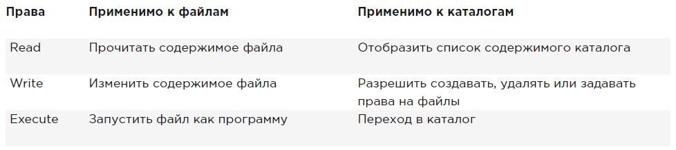
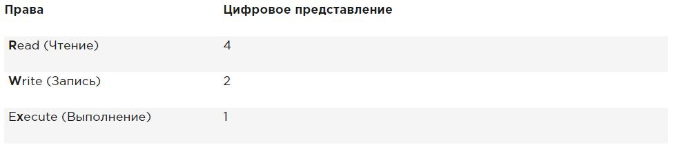
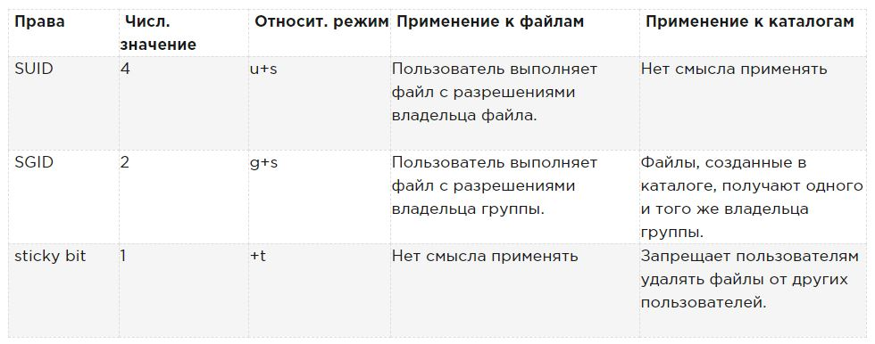
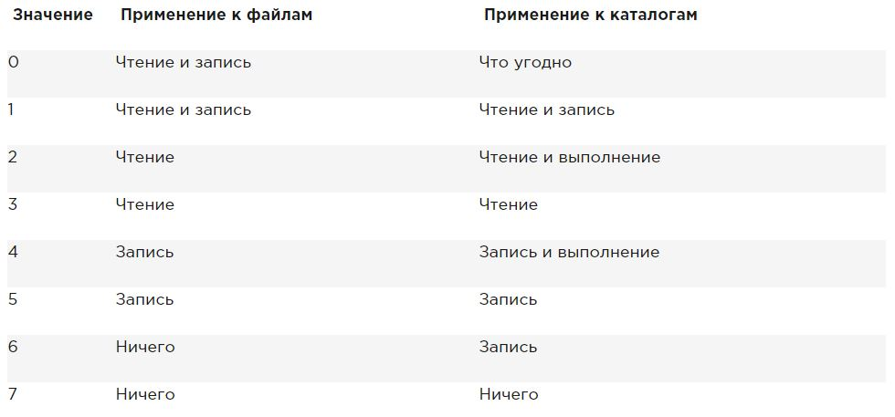

Права в Linux (chown, chmod, SUID, GUID, sticky bit, ACL, umask)
Всем привет. Это перевод статьи из книги RedHat RHCSA RHCE 7 RedHat Enterprise Linux 7 EX200 and EX300.
От себя: Надеюсь статья будет полезна не только начинающим, но и поможет более опытным администраторам упорядочить свои знания.
Итак, поехали.
Чтобы получить доступ к файлам в Linux, используются разрешения. Эти разрешения назначаются трем объектам: файлу, группе и другому объекту (то есть всем остальным). В этой статье вы узнаете, как применять разрешения.
Статья начинается с обзора основных понятий, после чего обсуждаются специальные разрешения (Special permissions) и списки контроля доступа (ACL). В конце этой статьи рассматривается настройка прав доступа по умолчанию через umask, а также управление расширенными атрибутами пользователя.
Управление владением файлами
Прежде чем обсуждать разрешения, вы должны знать о роли владельца файла и каталога. Владение файлами и каталогами жизненно важно для работы с разрешениями. В этом разделе вы сначала узнаете, как вы можете увидеть владельца. Затем вы узнаете, как изменить владельца группы и пользователя для файлов и каталогов.
Отображение владельца файла или каталога
В Linux у каждого файла и каждого каталога есть два владельца: пользователь и группа.
Эти владельцы устанавливаются при создании файла или каталога. Пользователь, который создаёт файл становится владельцем этого файла, а первичная группа, в которую входит этот же пользователь, так же становится владельцем этого файла. Чтобы определить, есть ли у вас как у пользователя права доступа к файлу или каталогу, оболочка проверяет владение ими.
Это происходит в следующем порядке:
Чтобы увидеть текущие назначения владельца, вы можете использовать команду ls -l. Эта команда показывает пользователя и группу-владельца. Ниже вы можете увидеть настройки владельца для каталогов в каталоге /home.
[root@server1 home]# ls -l
total 8
drwx------. 3 bob bob 74 Feb 6 10:13 bob
drwx------. 3 caroline caroline 74 Feb 6 10:13 caroline
drwx------. 3 fozia fozia 74 Feb 6 10:13 fozia
drwx------. 3 lara lara 74 Feb 6 10:13 lara
drwx------. 5 lisa lisa 4096 Feb 6 10:12 lisa
drwx------. 14 user user 4096 Feb 5 10:35 user
С помощью команды ls вы можете отобразить владельца файлов в данном каталоге. Иногда может оказаться полезным получить список всех файлов в системе, в которых в качестве владельца указан данный пользователь или группа. Для этого вы можете использовать find. Аргумент find -user может быть использован для этой цели. Например, следующая команда показывает все файлы, у которых в качестве владельца указан пользователь linda:
find / -user linda
Вы также можете использовать find для поиска файлов, у которых определенная группа является их владельцем.
Например, следующая команда ищет все файлы, принадлежащие группе users:
find / -group users
Изменение владельца
Чтобы применить соответствующие разрешения, первое, что нужно учитывать, это владение. Для этого есть команда chown. Синтаксис этой команды несложен для понимания:
chown кто что
Например, следующая команда меняет владельца каталога /home/account на пользователя linda:
chown linda /home/account
Команда chown имеет несколько опций, одна из которых особенно полезна: -R. Вы можете догадаться, что она делает, потому что эта опция доступна и для многих других команд. Это позволяет вам рекурсивно устанавливать владельца, что позволяет вам установить владельца текущего каталога и всего, что находится ниже. Следующая команда меняет владельца для каталога /home и всего, что находится под ним, на пользователя lisa:
Сейчас владельцы выглядят так:
[root@localhost ~]# ls -l /home
total 0
drwx------. 2 account account 62 Sep 25 21:41 account
drwx------. 2 lisa lisa 62 Sep 25 21:42 lisa
Выполним:
[root@localhost ~]# chown -R lisa /home/account
[root@localhost ~]#
Теперь пользователь lisa стал владельцем каталога account:
[root@localhost ~]# ls -l /home
total 0
drwx------. 2 lisa account 62 Sep 25 21:41 account
drwx------. 2 lisa lisa 62 Sep 25 21:42 lisa
Изменение владельца группы
Есть два способа изменить владение группой. Вы можете сделать это, используя chown, но есть специальная команда с именем chgrp, которая выполняет эту работу. Если вы хотите использовать команду chown, используйте . или : перед названием группы.
Следующая команда изменяет какого-либо владельца группы /home/account на группу account:
chown .account /home/account
Вы можете использовать chown для изменения владельца пользователя и/или группы несколькими способами. Вот несколько примеров:
Вы можете использовать команду chgrp, чтобы изменить владельца группы. Рассмотрим следующий пример, где вы можете с помощью chgrp установить владельцем каталога account группу sales:
chgrp .sales /home/account
Как и в случае с chown, вы можете использовать опцию -R с chgrp, а также рекурсивно менять владельца группы.
Понимание владельца по умолчанию
Вы могли заметить, что когда пользователь создает файл, применяется владение по умолчанию.
Пользователь, который создает файл, автоматически становится владельцем этого файла, а основная группа этого пользователя автоматически становится владельцем этого файла. Обычно это группа, которая указана в файле /etc/passwd в качестве основной группы пользователя. Однако если пользователь является членом нескольких групп, он может изменить эффективную основную группу.
Чтобы показать текущую эффективную первичную группу, пользователь может использовать команду groups:
[root@server1 ~]# groups lisa
lisa : lisa account sales
Если текущий пользователь linda хочет изменить эффективную первичную группу, он будет использовать команду newgrp, за которой следует имя группы, которую он хочет установить в качестве новой эффективной первичной группы. После использования команды newgrp первичная группа будет активна, пока пользователь не введет команду exit или не выйдет из системы.
Ниже показано, как пользователь lisa использует эту команду, что бы первичной группой стала группа sales:
lisa@server1 ~]$ groups
lisa account sales
[lisa@server1 ~]$ newgrp sales
[lisa@server1 ~]$ groups
sales lisa account
[lisa@server1 ~]$ touch file1
[lisa@server1 ~]$ ls -l
total 0
-rw-r--r--. 1 lisa sales 0 Feb 6 10:06 file1
После изменения действующей основной группы все новые файлы, созданные пользователем, получат эту группу в качестве группы-владельца.Чтобы вернуться к исходной настройке первичной группы, используйте exit.
Чтобы иметь возможность использовать команду newgrp, пользователь должен быть членом той группы, которую он хочет использовать в качестве первичной. Кроме этого, групповой пароль может быть использован для группы с помощью команды gpasswd. Если пользователь использует команду newgrp, но не является членом целевой группы, оболочка запрашивает пароль группы. После того, как вы введете правильный групповой пароль, будет установлена новая эффективная первичная группа.
Управление основными правами
Система разрешений Linux была изобретена в 1970-х годах. Поскольку вычислительные потребности были ограничены в те годы, базовая система разрешений была довольно ограничена. Эта система разрешений использует три разрешения, которые можно применять к файлам и каталогам. В этом разделе вы узнаете, как использовать и изменять эти разрешения.
Понимание прав на чтение, запись и выполнение
Три основных разрешения позволяют вам читать, записывать и выполнять файлы. Эффект этих разрешений отличается при применении к файлам или каталогам. Применительно к файлу разрешение на чтение дает вам право открыть файл для чтения. Следовательно, вы можете прочитать его содержимое, но это означает, что ваш компьютер может открыть файл, чтобы что-то с ним сделать.
Программный файл, которому требуется доступ к библиотеке, должен, например, иметь доступ для чтения к этой библиотеке. Из этого следует, что разрешение на чтение — это самое основное разрешение, которое вам нужно для работы с файлами.
Применительно к каталогу чтение позволяет отображать содержимое этого каталога. Вы должны знать, что это разрешение не позволяет вам читать файлы в каталоге. Система разрешений Linux не знает наследования, и единственный способ прочитать файл — использовать разрешения на чтение для этого файла.
Как вы, вероятно, можете догадаться, разрешение на запись, если оно применяется к файлу, позволяет записывать в файл. Иначе говоря, позволяет изменять содержимое существующих файлов. Однако он не позволяет создавать или удалять новые файлы или изменять права доступа к файлу. Для этого вам нужно дать разрешение на запись каталогу, где вы хотите создать файл. В каталогах это разрешение также позволяет создавать и удалять новые подкаталоги.
Разрешение на выполнение — это то, что вам нужно для выполнения файла. Оно никогда не будет установлено по умолчанию, что делает Linux практически полностью невосприимчивым к вирусам. Только кто-то с правами записи на каталог может применять разрешение на выполнение.
Ниже обобщается использование основных разрешений:

Использование chmod
Для управления правами используется команда chmod. При использовании chmod вы можете устанавливать разрешения для пользователя (user), группы (group) и других (other). Вы можете использовать эту команду в двух режимах: относительный режим и абсолютный режим. В абсолютном режиме три цифры используются для установки основных разрешений.

При настройке разрешений рассчитайте необходимое вам значение. Если вы хотите установить чтение, запись и выполнение для пользователя, чтение и выполнение для группы, а также чтение и выполнение для других в файле /somefile, то вы используете следующую команду chmod:
chmod 755 /somefile
Когда вы используете chmod таким способом, все текущие разрешения заменяются установленными вами разрешениями.
Если вы хотите изменить разрешения относительно текущих разрешений, вы можете использовать chmod в относительном режиме. При использовании chmod в относительном режиме вы работаете с тремя индикаторами, чтобы указать, что вы хотите сделать:
При изменении разрешений в относительном режиме вы можете пропустить часть «кому», чтобы добавить или удалить разрешение для всех объектов. Например, эта команда добавляет разрешение на выполнение для всех пользователей:
chmod +x somefile
При работе в относительном режиме вы также можете использовать более сложные команды. Например, эта команда добавляет разрешение на запись в группу и удаляет чтение для других:
chmod g+w,o-r somefile
При использовании chmod -R o+rx /data вы устанавливаете разрешение на выполнение для всех каталогов, а также для файлов в каталоге /data. Чтобы установить разрешение на выполнение только для каталогов, а не для файлов, используйте chmod -R o+ rX /data.
Верхний регистр X гарантирует, что файлы не получат разрешение на выполнение, если файл уже не установил разрешение на выполнение для некоторых объектов. Это делает X более разумным способом работы с разрешениями на выполнение; это позволит избежать установки этого разрешения на файлы, где оно не требуется.
Расширенные права
Помимо основных разрешений, о которых вы только что прочитали, в Linux также есть набор расширенных разрешений. Это не те разрешения, которые вы устанавливаете по умолчанию, но иногда они предоставляют полезное дополнение. В этом разделе вы узнаете, что они из себя представляют и как их настроить.
Понимание расширенных прав SUID, GUID и sticky bit
Есть три продвинутых разрешения. Первое из них — это разрешение на установку идентификатора пользователя (SUID). В некоторых особых случаях вы можете применить это разрешение к исполняемым файлам. По умолчанию пользователь, запускающий исполняемый файл, запускает этот файл со своими собственными разрешениями.
Для обычных пользователей это обычно означает, что использование программы ограничено. Однако в некоторых случаях пользователю требуются специальные разрешения, только для выполнения определенной задачи.
Рассмотрим, например, ситуацию, когда пользователю необходимо сменить пароль. Для этого пользователь должен записать свой новый пароль в файл /etc/shadow. Однако этот файл недоступен для записи пользователям, не имеющим прав доступа root:
root@hnl ~]# ls -l /etc/shadow
----------. 1 root root 1184 Apr 30 16:54 /etc/shadow
Разрешение SUID предлагает решение этой проблемы. В утилите /usr/bin/passwd это разрешение применяется по умолчанию. Это означает, что при смене пароля пользователь временно получает права root, что позволяет ему записывать в файл /etc/shadow. Вы можете видеть разрешение SUID с ls -l как s в позиции, где обычно вы ожидаете увидеть x для пользовательских разрешений:
[root@hnl ~]# ls -l /usr/bin/passwd
-rwsr-xr-x. 1 root root 32680 Jan 28 2010 /usr/bin/passwd
Разрешение SUID может выглядеть полезным (и в некоторых случаях так оно и есть), но в то же время оно потенциально опасно. При неправильном применении вы можете случайно раздать права доступа root. Поэтому я рекомендую использовать его только с максимальной осторожностью.
Большинству администраторов никогда не придется его использовать; вы увидите его только в некоторых файлах, где операционная система должна установить его по умолчанию.
Второе специальное разрешение — это идентификатор группы (SGID). Это разрешение имеет два эффекта. При применении к исполняемому файлу, он дает пользователю, который исполняет файл, разрешения владельца группы этого файла. Таким образом, SGID может выполнить более или менее то же самое, что SUID. Однако для этой цели SGID практически не используется.
Как и в случае с разрешением SUID, SGID применяется к некоторым системным файлам в качестве настройки по умолчанию.
Когда применяется к каталогу, SGID может быть полезен, потому что вы можете использовать его для установки владельца группы по умолчанию для файлов и подкаталогов, созданных в этом каталоге. По умолчанию, когда пользователь создает файл, его эффективная первичная группа устанавливается как владелец группы для этого файла.
Это не всегда очень полезно, особенно потому, что у пользователей Red Hat/CentOS в качестве основной группы задана группа с тем же именем, что и у пользователя, и из которых пользователь является единственным участником. Таким образом, по умолчанию файлы, которые создает пользователь, будут групповыми для общего доступа.
Представьте себе ситуацию, когда пользователи linda и lori работают в бухгалтерии и являются членами группы account. По умолчанию эти пользователи являются членами частной группы, единственным членом которой они являются. Однако оба пользователя являются членами группы account, но также и в качестве параметра вторичной группы.
Ситуация по умолчанию состоит в том, что когда любой из этих пользователей создает файл, основная группа становится владельцем. Поэтому по умолчанию linda не может получить доступ к файлам, созданным lori, и наоборот. Однако, если вы создаете общий каталог группы (скажем, /groups/account) и убедитесь, что разрешение SGID применено к этому каталогу и что учет группы установлен как владелец группы для этого каталога, все файлы, созданные в этом каталоге и во всех его подкаталогах, также получают account группы как владельца группы по умолчанию.
По этой причине разрешение SGID является очень полезным разрешением для установки в каталогах общих групп.
Разрешение SGID показывается в выводе ls -ld как s в позиции, где вы обычно находите разрешение на выполнение группы:
[root@hnl data]# ls -ld account
drwxr-sr-x. 2 root account 4096 Apr 30 21:28 account
Третий из специальных разрешений — sticky bit. Это разрешение полезно для защиты файлов от случайного удаления в среде, где несколько пользователей имеют права на запись в один и тот же каталог. Если применяется закрепленный sticky bit, пользователь может удалить файл, только если он является пользователем-владельцем файла или каталога, в котором содержится файл. По этой причине он применяется в качестве разрешения по умолчанию для каталога /tmp и может быть полезен также для каталогов общих групп.
Без sticky bit, если пользователь может создавать файлы в каталоге, он также может удалять файлы из этого каталога. В общедоступной групповой среде это может раздражать. Представьте себе пользователей linda и lori, которые оба имеют права на запись в каталог /data/account и получают эти разрешения благодаря участию в группе account. Поэтому linda может удалять файлы, созданные lori, и наоборот.
Когда вы применяете sticky bit, пользователь может удалять файлы, только если выполняется одно из следующих условий:
При использовании ls -ld, вы можете видеть sticky bit как t в позиции, где вы обычно видите разрешение на выполнение для других:
[root@hnl data]# ls -ld account/
drwxr-sr-t. 2 root account 4096 Apr 30 21:28 account/
Применение расширенных прав
Чтобы применить SUID, SGID и sticky bit, вы также можете использовать chmod. SUID имеет числовое значение 4, SGID имеет числовое значение 2, а sticky bit имеет числовое значение 1.
Если вы хотите применить эти разрешения, вам нужно добавить четырехзначный аргумент в chmod, первая цифра которого относится к специальным разрешениям. Следующая строка, например, добавит разрешение SGID на каталог и установит rwx для пользователя и rx для группы и других:
chmod 2755 /somedir
Это довольно непрактично, если вам нужно посмотреть текущие права доступа, которые установлены, прежде чем работать с chmod в абсолютном режиме. (Вы рискуете перезаписать разрешения, если вы этого не сделаете.) Поэтому я рекомендую работать в относительном режиме, если вам нужно применить какое-либо из специальных разрешений:
В таблице обобщено все, что важно знать об управлении специальными разрешениями.

Пример работы со специальными правами
В этом примере вы используете специальные разрешения, чтобы членам группы было проще обмениваться файлами в каталоге общей группы. Вы назначаете ID-бит установленного идентификатора группы, а также sticky bit, и видите, что после их установки добавляются функции, облегчающие совместную работу членов группы.
Управление ACL (setfacl, getfacl) в Linux
Даже если расширенные права, которые обсуждались выше, добавляют полезную функциональность к тому, как Linux работает с разрешениями, это не позволяет вам предоставлять разрешения более чем одному пользователю или одной группе в одном файле.
Списки контроля доступа предлагают эту функцию. Кроме того, они позволяют администраторам устанавливать разрешения по умолчанию сложным способом, при котором установленные разрешения могут различаться в разных каталогах.
Понимание ACL
Хотя подсистема ACL добавляет отличные функциональные возможности вашему серверу, у нее есть один недостаток: не все утилиты поддерживают ее. Следовательно, вы можете потерять настройки ACL при копировании или перемещении файлов, а программное обеспечение для резервного копирования может не выполнить резервное копирование настроек ACL.
Утилита tar не поддерживает ACL. Чтобы убедиться, что настройки ACL не будут потеряны при создании резервной копии, используйте star вместо tar. star работает с теми же параметрами, что и tar; он просто добавляет поддержку настроек ACL.
Вы также можете создать резервную копию ACL с помощью getfacl, которую можно восстановить с помощью команды setfacl. Чтобы создать резервную копию, используйте getfacl -R /directory > file.acls. Чтобы восстановить настройки из файла резервной копии, используйте setfacl --restore=file.acl.
Отсутствие поддержки некоторыми инструментами не должно быть проблемой. Списки ACL часто применяются к каталогам как структурная мера, а не к отдельным файлам.
Поэтому их будет не много, а всего лишь несколько, примененных в умных местах файловой системы. Следовательно, восстановить исходные списки ACL, с которыми вы работали, относительно легко, даже если ваше ПО для резервного копирования их не поддерживает.
Подготовка файловой системы для ACL
Перед началом работы с ACL может потребоваться подготовить файловую систему для поддержки ACL. Поскольку метаданные файловой системы необходимо расширять, не всегда есть поддержка по умолчанию для ACL в файловой системе. Если при настройке списков ACL для файловой системы вы получаете сообщение «operation not supported», возможно, в вашей файловой системе отсутствует поддержка ACL.
Чтобы это исправить, вам нужно добавить опцию acl mount в файле /etc/fstab, чтобы файловая система была смонтирована с поддержкой ACL по умолчанию.
Изменение и просмотр настроек ACL с помощью setfacl и getfacl
Чтобы установить ACL, вам нужна команда setfacl. Чтобы увидеть текущие настройки ACL, вам нужен getfacl. Команда ls -l не показывает никаких существующих ACL; он просто показывает + после списка разрешений, который указывает, что списки ACL применяются и к файлу.
Перед настройкой списков ACL всегда полезно показать текущие настройки ACL с помощью getfacl. Ниже на примере вы можете увидеть текущие права доступа, как показано с помощью ls -ld, а также как показано с getfacl. Если вы посмотрите достаточно внимательно, вы увидите, что показанная информация точно такая же.
[root@server1 /]# ls -ld /dir
drwxr-xr-x. 2 root root 6 Feb 6 11:28 /dir
[root@server1 /]# getfacl /dir
getfacl: Removing leading '/' from absolute path names
# file: dir
# owner: root
# group: root
user::rwx
group::r-x
other::r-x
В результате выполнения команды getfacl ниже видно, что разрешения показаны для трех разных объектов: пользователя, группы и других. Теперь давайте добавим ACL, чтобы дать права на чтение и выполнение и группе sales. Команда для этого setfacl -m g:sales:rx /dir. В этой команде -m указывает, что текущие настройки ACL необходимо изменить. После этого g:sales:rx сообщает команде установить ACL для чтения и выполнения (rx) для группы (g) sales. Ниже вы можете увидеть, как выглядит команда, а также вывод команды getfacl после изменения текущих настроек ACL.
[root@server1 /]# setfacl -m g:sales:rx /dir
[root@server1 /]# getfacl /dir
getfacl: Removing leading '/' from absolute path names
# file: dir
# owner: root
# group: root
user::rwx
group::r-x
group:sales:r-x
mask::r-x
other::r-x
Теперь, когда вы понимаете, как установить групповой ACL, легко понять ACL для пользователей и других пользователей. Например, команда setfacl -m u:linda:rwx /data дает разрешения пользователю linda в каталоге /data, не делая его владельцем и не изменяя назначение текущего владельца.
Команда setfacl имеет много возможностей и опций. Один вариант особенно важен, параметр -R. Если используется, опция делает настройку ACL для всех файлов и подкаталогов, которые в настоящее время существуют в каталоге, где вы устанавливаете ACL. Рекомендуется всегда использовать эту опцию при изменении списков ACL для существующих каталогов.
Работа с ACL по умолчанию
Одним из преимуществ использования списков ACL является то, что вы можете давать разрешения нескольким пользователям или группам в каталоге. Еще одним преимуществом является то, что вы можете включить наследование, работая с ACL по умолчанию.
Установив ACL по умолчанию, вы определите разрешения, которые будут установлены для всех новых элементов, создаваемых в каталоге. Имейте в виду, что ACL по умолчанию не меняет разрешения для существующих файлов и подкаталогов. Чтобы изменить их, нужно добавить и обычный ACL!
Это важно знать. Если вы хотите использовать ACL для настройки доступа нескольких пользователей или групп к одному и тому же каталогу, вы должны установить ACL дважды. Сначала используйте setfacl -R -m, чтобы изменить ACL для текущих файлов. Затем используйте setfacl -m d:, чтобы позаботиться обо всех новых элементах, которые также будут созданы.
Чтобы установить ACL по умолчанию, вам просто нужно добавить опцию d после опции -m (порядок имеет значение!). Поэтому используйте setfacl -m d:g:sales:rx /data, если вы хотите, чтобы группа sales имела доступ на чтение и выполнение всего, что когда-либо будет создано в каталоге /data.
При использовании списков ACL по умолчанию также может быть полезно установить ACL для других. Обычно это не имеет особого смысла, потому что вы также можете изменить разрешения для других, используя chmod. Однако, что вы не можете сделать с помощью chmod, это указать права, которые должны быть предоставлены другим пользователям для каждого нового файла, который когда-либо будет создан. Если вы хотите, чтобы другие не получали никаких разрешений на что-либо, созданное в /data, например, используйте setfacl -m d:o::- /data.
ACL и обычные разрешения не всегда хорошо интегрированы. Проблемы могут возникнуть, если вы применили ACL по умолчанию к каталогу, после чего элементы были добавлены в этот каталог, и затем попытаетесь изменить обычные разрешения. Изменения, которые применяются к обычным разрешениям, не будут хорошо отражены в обзоре ACL. Чтобы избежать проблем, сначала установите обычные разрешения, после чего установите ACL по умолчанию (и после этого старайтесь не изменять их снова).
Пример управления расширенными правами с использованием ACL
В этом примере вы продолжите работу с каталогами /data/account и /data/sales, которые вы создали ранее. В предыдущих примерах вы гарантировали, что группа sales имеет разрешения на /data/sales, а группа account имеет разрешения на /data/account.
Сначала убедитесь, что группа account получает разрешения на чтение в каталоге /data/sales, а группа sales получает разрешения на чтение в каталоге /data/account.
Затем вы устанавливаете списки ACL по умолчанию, чтобы убедиться, что для всех новых файлов правильно установлены разрешения для всех новых элементов.
Установка прав по умолчанию с помощью umask
Выше вы узнали, как работать с ACL по умолчанию. Если вы не используете ACL, есть параметр оболочки, который определяет права по умолчанию, которые вы получите: umask (обратная маска). В этом разделе вы узнаете, как изменить разрешения по умолчанию с помощью umask.
Вы, наверное, заметили, что при создании нового файла устанавливаются некоторые разрешения по умолчанию. Эти разрешения определяются настройкой umask. Этот параметр оболочки применяется ко всем пользователям при входе в систему. В параметре umask используется числовое значение, которое вычитается из максимальных разрешений, которые могут быть автоматически установлены для файла; максимальная настройка для файлов — 666, а для каталогов — 777.
Однако некоторые исключения относятся к этому правилу. Вы можете найти полный обзор настроек umask в таблице внизу.
Из цифр, используемых в umask, как и в случае числовых аргументов для команды chmod, первая цифра относится к разрешениям пользователя, вторая цифра относится к разрешениям группы, а последняя относится к разрешениям по умолчанию, установленным для других. Значение umask по умолчанию 022 дает 644 для всех новых файлов и 755 для всех новых каталогов, созданных на вашем сервере.
Полный обзор всех числовых значений umask и их результатов в таблице ниже.

Простой способ увидеть, как работает параметр umask, выглядит следующим образом: начните с разрешений по умолчанию для файла, установленного на 666, и вычтите umask, чтобы получить действующие разрешения. Сделайте то же самое для каталога и его разрешений по умолчанию 777.
Есть два способа изменить настройку umask: для всех пользователей и для отдельных пользователей. Если вы хотите установить umask для всех пользователей, вы должны убедиться, что параметр umask учитывается при запуске файлов среды оболочки, как указано в /etc/profile. Правильный подход — создать сценарий оболочки с именем umask.sh в каталоге /etc/profile.d и указать umask, который вы хотите использовать в этом сценарии оболочки. Если в этом файле изменяется umask, он применяется ко всем пользователям после входа на сервер.
Альтернативой настройке umask через /etc/profile и связанные файлы, где он применяется ко всем пользователям, входящим в систему, является изменение настроек umask в файле с именем .profile, который создается в домашнем каталоге каждого пользователя.
Настройки, примененные в этом файле, применяются только для отдельного пользователя; следовательно, это хороший метод, если вам нужно больше детализации. Мне лично нравится эта функция, чтобы изменить значение umask по умолчанию для пользователя root на 027, тогда как обычные пользователи работают с umask по умолчанию 022.
Работа с расширенными атрибутами пользователя
Это заключительный раздел о правах в Linux.
При работе с разрешениями всегда существует связь между объектом пользователя или группы и разрешениями, которые эти объекты пользователя или группы имеют для файла или каталога. Альтернативный метод защиты файлов на сервере Linux — работа с атрибутами.
Атрибуты выполняют свою работу независимо от пользователя, который обращается к файлу.
Как и в случае с ACL, для атрибутов файла может потребоваться включить параметр mount.
Это опция user_xattr. Если вы получаете сообщение «operation not supported» при работе с расширенными атрибутами пользователя, обязательно установите параметр mount в файле /etc/fstab.
Многие атрибуты задокументированы. Некоторые атрибуты доступны, но еще не реализованы. Не используйте их; они ничего вам не принесут.
Ниже приведены наиболее полезные атрибуты, которые вы можете применить:
A Этот атрибут гарантирует, что время доступа к файлу файла не изменяется.
Обычно каждый раз, когда файл открывается, время доступа к файлу должно быть записано в метаданные файла. Это отрицательно влияет на производительность; поэтому для файлов, к которым осуществляется регулярный доступ, атрибут A можно использовать для отключения этой функции.
a Этот атрибут позволяет добавлять, но не удалять файл.
c Если вы используете файловую систему, в которой поддерживается сжатие на уровне тома, этот атрибут файла гарантирует, что файл будет сжат при первом включении механизма сжатия.
D Этот атрибут гарантирует, что изменения в файлах записываются на диск немедленно, а не в кэширование в первую очередь. Это полезный атрибут в важных файлах базы данных, позволяющий убедиться, что они не теряются между файловым кешем и жестким диском.
d Этот атрибут гарантирует, что файл не будет сохранен в резервных копиях, где используется утилита дампа.
I Этот атрибут включает индексирование для каталога, в котором он включен. Это обеспечивает более быстрый доступ к файлам для примитивных файловых систем, таких как Ext3, которые не используют базу данных B-tree для быстрого доступа к файлам.
i Этот атрибут делает файл неизменным. Следовательно, в файл нельзя вносить изменения, что полезно для файлов, которые нуждаются в дополнительной защите.
j Этот атрибут гарантирует, что в файловой системе ext3 файл сначала записывается в журнал, а затем — в блоки данных на жестком диске.
s Перезаписать блоки, в которых файл был сохранен, на 0 с после удаления файла. Это гарантирует, что восстановление файла невозможно после того, как он был удален.
u Этот атрибут сохраняет информацию об удалении. Это позволяет разрабатывать утилиту, которая работает с этой информацией для спасения удаленных файлов.
Если вы хотите применить атрибуты, вы можете использовать команду chattr. Например, используйте chattr +s somefile, чтобы применить атрибуты к somefile. Нужно удалить атрибут? Тогда используйте chattr -s somefile, и он будет удален. Чтобы получить обзор всех атрибутов, которые в настоящее время применяются, используйте команду lsattr.
Резюме
В этой статье вы узнали, как работать с разрешениями. Вы прочитали о трех основных разрешениях, расширенных разрешениях и о том, как применять ACL-списки в файловой системе. Вы также узнали, как использовать параметр umask для применения разрешений по умолчанию. В конце этой статьи вы узнали, как использовать расширенные пользователем атрибуты для применения дополнительного уровня безопасности файловой системы.
Если вам понравился этот перевод, то прошу написать об этом в комментариях. Будет больше мотивации делать полезные переводы.
В статье исправил некоторые опечатки и грамматические ошибки. Уменьшил некоторые громоздкие абзацы на более мелкие для удобства восприятия.
Вместо «Только кто-то с административными правами на каталог может применять разрешение на выполнение.» исправил на «Только кто-то с правами записи на каталог может применять разрешение на выполнение.», что будет более правильным.
За замечания спасибо berez.
Заменил:
Если вы не являетесь владельцем пользователя, оболочка проверит, являетесь ли вы участником группы, которая также называется группой файла.
На:
Если вы не являетесь владельцем файла, оболочка проверит, являетесь ли вы участником группы, у которой есть разрешения на этот файл. Если вы являетесь участником этой группы, вы получаете доступ к файлу с разрешениями, которые для группы установлены, и оболочка прекратит проверку.
Спасибо за замечание CryptoPirate